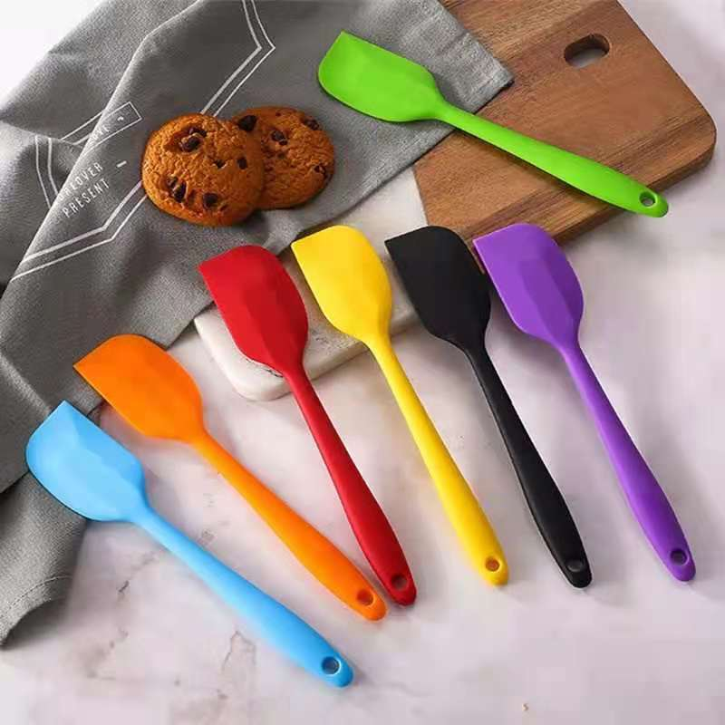

10 Best Cookie Baking Tools
I’m happy to recommend the tools I use for cookie-baking success to fellow home bakers. This list is a great place to start if you’re a beginner, are creating a registry, or are shopping for a gift for the cookie monster in your life.1. HALF SHEET PANS
Quantity recommended:at least 2.First and foremost, quality cookie sheets are a MUST. Did you know the color and material of your cookie sheets greatly impacts the way your cookies turn out? Dark metal sheets can easily over-bake cookies, and thin, flimsy cookie sheets can result in burnt cookie bottoms.
Both of these brands are excellent quality and have stood the test of time with frequent use. The 12×17-inch size is perfect for a dozen cookies, and the rimmed edges make these pans great for other recipes like toffee, caramel corn, sheet cakes, cake rolls, and slab pies.
Bakers’ Tip:
Never place cookie dough on a hot baking sheet. It’s best to own a few cookie sheets so you always have a room-temperature sheet on hand for your next batch. Otherwise, you have to wait for the baking sheet to cool down before placing more cookie dough on it.

2. SILICONE BAKING MATS
Quantity recommended: at least 2.Baking mats are my favorite cookie-baking tool. Coating your baking sheet with nonstick spray or butter creates an overly greasy foundation, which causes the cookies to over-spread. I always recommend a silicone baking mat (11×16-inch size to fit your half sheet pans) because they grip onto the bottom of your cookies, preventing the cookies from spreading too much. These mats also promote even browning. They’re reusable, dishwasher friendly, and perfect for roasting veggies, meats, fish, potatoes, etc.
3. COOKIE SCOOPS
Quantity recommended: I have a set of 3 sizes, but if you just want one, the medium size cookie scoop is the one I use most for making cookies.Cookie scoops are extremely handy. They help keep your drop cookies uniform in size and shape; an easy squeeze of the handle cleanly releases the sticky dough ball; plus, they have so many other uses! I use the large size (3 Tablespoons) cookie scoop for cupcake/muffin and pancake batter, ice cream, meatballs, and even for serving mashed potatoes. I use the medium size (1.5 Tablespoons) for most cookies—particularly textured oatmeal raisin cookies and sticky coconut macaroons. And I use the small size (1 Tablespoon) for truffles, smaller cookies like these peanut butter cookies, and as a melon baller.
4. COOLING RACKS
Quantity recommended: At least 2I typically allow my baked cookies to cool for 5 minutes on the cookie sheets once I remove them from the oven. However, I immediately transfer them to a cooling rack after that. Why? The bottoms of the cookies need some air in order to cool, and we want to avoid soggy cookie bottoms. I own a few of these cooling racks. They’re inexpensive, get the job done, and have lasted me years.
5. STAND MIXER
Quantity recommended: 1stand mixer is a must if you bake cookies on the regular. I really like the 4.5-quart size for most baking recipes. You can certainly get away with a hand mixer instead (here’s the hand mixer I own and love), but a stand mixer makes the job easier and is extra versatile since you can use varying attachments with it. When I’m working with an enormous amount of dough/batter or making something that requires several minutes of mixing (old-fashioned fudge, whipped cream or egg whites, bread dough, etc.) a stand mixer is worth its weight in gold.
6. QUALITY MEASURING CUPS + A DIGITAL FOOD SCALE
Quantity recommended: 1 set of measuring cups + 1 food scaleFor more accurate measuring, definitely pick up a food scale. A gram is always a gram. An ounce is always an ounce. A cup is NOT always a cup, and therefore weighing is the most accurate way to measure. My team and I include weight measurements in all my recipes.
7. ROLLING PIN
Quantity recommended: 1A rolling pin is a must-have for shaped cut-out cookies. Rolling pins vary in price, but the one I have is pretty inexpensive and has lasted me for years, with very frequent use. I highly recommend it.
8. STURDY COOKIE CUTTERS
You may love all the whimsically adorable shapes, but make sure you’re buying quality cookie cutters. By that I mean cookie cutters that are strong, sturdy, and have sharp edges to give you a clean cut.
9. SILICONE SPATULAS
Quantity recommended: at least 2Spatulas are essential in any kitchen, especially if they are well-made and heavy duty. From stirring and mixing, to scraping the sides of bowls, spreading frosting, cooking, etc.—I use them for everything, everyday. And spatulas with cute sayings make a fun gift!
10. COOKIE CARRIER
Quantity recommended: 1Taking your cookies beyond the kitchen? Whether your batch is for a party, bake sale, or toting along to work, you need a case that will safely transport your cookies. I use it for cupcakes, of course, but I also use it for cookies. Here’s my trick: I flip the tray and simply pile the cookies inside.